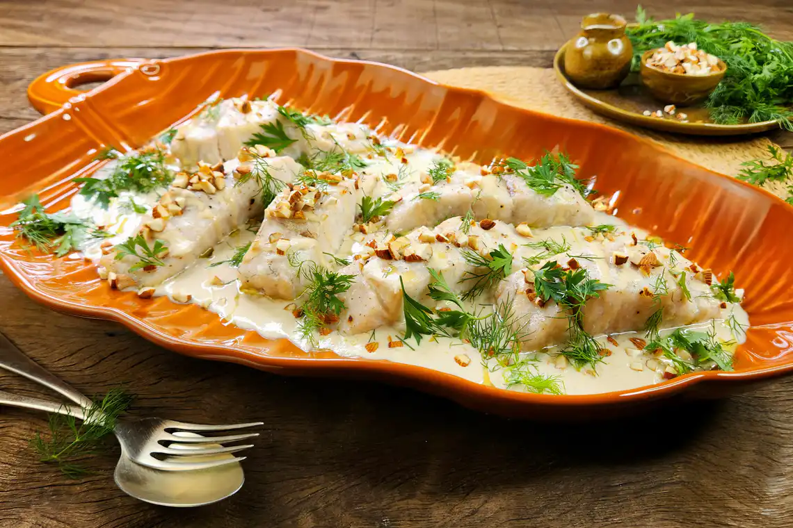

Peito bovino com cerveja na pressão

Refeição nada óbvia, simples de preparar e cheia de charme. Vem com a gente: o segredo para o peixe ficar macio e muito saboroso
é o pouco tempo de forno. O molho de tahine e as amêndoas picadas e tostadas deixam o prato para lá de charmoso.
Ingredientes
6 postas de robalo (cerca de 150 g cada)
⅔ de xícara (chá) de tahine (pasta de gergelim)
½ xícara (chá) de água filtrada
1 dente de alho
⅓ de xícara (chá) de amêndoas cruas com pele
caldo de 1 limão
azeite
sal
pimenta-do-reino moída na hora a gosto
folhas de salsinha a gosto para servir
folhas de endro (dill) a gosto para servir
2 colheres (sopa) de azeite
Modo de preparo
- Coloque as amêndoas numa assadeira pequena e leve ao forno (frio mesmo). Preaqueça o forno a 200 ºC (temperatura média), com as amêndoas dentro — elas vão assar por cerca de 10 minutos enquanto o forno preaquece.
- Descasque e esprema o dente de alho numa tigela. Junte o tahine, o caldo de limão, 1 colher (sopa) de azeite e misture bem. Adicione a água aos poucos, misturando com uma colher, até formar um molho cremoso. Tempere com sal e reserve.
- Retire as amêndoas do forno e deixe esfriar. Unte uma assadeira média com azeite.
- Tempere as postas de robalo com 1 colher (chá) de sal e pimenta a gosto. Transfira os pedaços de peixe para a assadeira untada e regue com 2 colheres (sopa) de azeite. Leve ao forno para assar por cerca de 15 minutos — o peixe deve estar assado e ainda úmido no centro.
- Enquanto isso, pique grosseiramente as amêndoas; lave e seque as ervas.
- Numa travessa, coloque cerca de ⅔ do molho de tahine formando uma cama para o peixe. Coloque as postas de peixe sobre o molho e finalize com as amêndoas picadas, as ervas e um fio de azeite. Sirva a seguir com o restante do molho.
Siga o NutriChef
Política de Privacidade Termos de Uso
Editora Garetti LTDA. © 2025